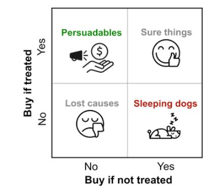

From correlations to causality in machine learning– a gentle guide to causal inference
06-04, 11:00–11:40 (Europe/London), Salisbury
Today most conventional ML systems look to exploit correlations in data in order to draw inferences. However as we learned back in school Statistics class, correlation is not causation. So when you need to know the ‘why’ behind a particular prediction, or why A outperforms B in an experiment, then relying on correlations is insufficient. Furthermore some ML models are build purely for explainability and insight purposes rather than predictions, in order to understand how the world works so we could potentially make some kind of policy change, e.g. What if we had chosen a different strategy or tactic – would the outcome have been different, and if so, by how much? To answer these kinds of questions, you need to delve into the world of causality.
This talk is a gentle (and occasionally entertaining) introduction to the interdisciplinary field of causality and how it is starting to impact machine learning. You will learn what kinds of questions causal inference can answer, and how it can address some of the limitations of current explainable ML methods, under certain conditions. I draw upon use-cases drawn from financial services and marketing, and I will show a short practical example of how combining human domain knowledge (intuitively via Graphical Causal Models) along with your data can sometimes unlock insights not recoverable by purely data driven approaches.
The increasing ubiquity of ML systems in daily life, sometimes in high-stakes decision making, means there is a lot more interest in trust and explainability in such systems. For example, the forthcoming regulatory proposals by the EU (the ‘AI Act’).
Today most conventional ML systems look to exploit correlations in data in order to draw inferences. However as we learned back in school Statistics class, correlation is not causation (often side-stepping the question ‘in that case, what is causation?’). Often, if all one cares about are accurate, low-stakes predictions, then the distinction doesn’t matter. However, when you need to know the ‘why’ behind a particular prediction, relying on correlations alone is insufficient. Furthermore, some ML models are build purely for explainability purposes, rather than making predictions, in order to gain insights into how a particular real-world system works, with the intent of making some policy change that will (hopefully) improve some outcome of interest. In such cases even state-of-the-industry explainability methods like SHAP don’t work well.
In my work I get asked a lot of questions along the lines of What If? What we had chosen a different strategy or tactic, would the outcome have been different, and if so by how much?? What levers can we pull going forward to improve business performance? To answer these kinds of questions, we need to delve into the world of causality.
This talk is a light hearted introduction to the field of causality and how it intersects with the machine learning field. You will learn what kinds of questions causal inference can answer, and how it can address some of the limitations of current explainable ML methods, under certain conditions, with use-cases drawn from financial services and marketing.
Fields like economics and medicine have been asking these questions for years, to attempt to provide robust answers to hard to measure, social policy questions (the 2021 Nobel Prize for Economics was shared between 2 research teams that used novel causal inference approaches in education and labour policy). But in recent times, there are been some cross pollination with Machine Learning, and indeed, some notable scholars are actively engaged in using causality to help design the next generation of machine learning problems (causal representational learning). So it’s a contemporary and upwardly trending topic.
This talk assumes no background in causality and only a rudimentary understanding of machine learning or statistics would be helpful. There is no maths or equations presented here.
In summary, this talk is divided into 3 parts: 1. A broad introduction to causal inference and where I use it in my financial services work 2. The intersection of where causality meets machine learning 3. A practical example where a causal inference-based approach (through intuitive Graphical Causal Models, Python code provided) in concert with your data beats the standard correlation-based approaches in terms of being able to uncover the true casual effects. 4. Where to go for more information - I’ll provide a curated list of resources for the interested reader.
Steve Goodman has 20 years experience in data analytics and data science, mostly in the fields of marketing, consulting and financial services. He is currently a Data Science Lead at Tide, a financial services platform based in London. He holds a PhD in Applied Statistics and a MBA.

The book of why
https://en.wikipedia.org/wiki/The_Book_of_Why